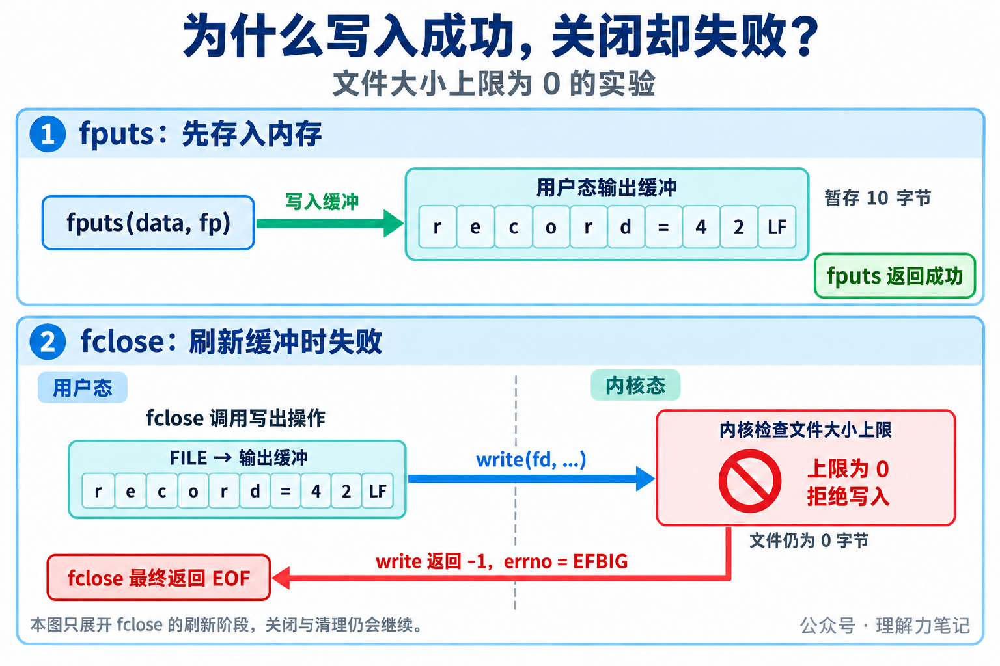
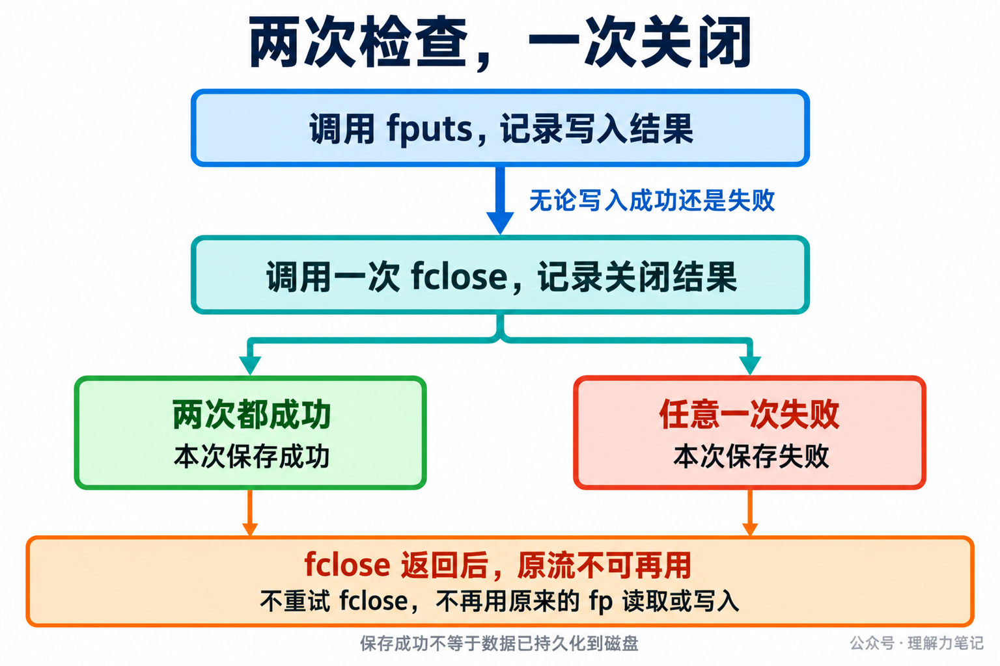

fputs 返回成功，程序接着关闭文件，却收到 fclose: File too large。错误为什么到最后一步才出现？
结论：写入成功可能只表示标准 I/O 库接受了数据；
fclose会尝试刷新尚未写出的内容，底层错误可能到这时才暴露。必须检查关闭结果，而且无论返回 0 还是EOF，都不能再次使用原来的流。
这篇文章怎么读？
先用实验观察报错发生在哪一步，再看关闭过程中发生了什么，以及失败后怎样结束资源使用。
| 你是谁 | 看哪一章 | 会得到什么 |
|---|---|---|
| 搜索者 / 被推荐者 | 第一章 · 先解决问题 | 复现写入成功、关闭失败 |
| 学习者 | 第二章 · 机制解释 | 理解缓冲接收与实际写出的先后关系 |
| 编程者 | 第三章 · 工程使用 | 一次关闭、保留错误、不再访问旧流 |
| 求职者 | 第四章 · 面试提炼 | 解释为何关闭报错也不能重试原流 |
本次实测环境是 macOS 14.8.8 x86_64、Apple clang 16.0.0，未在 Linux 主机实测。Linux/glibc 的机制另外依据规范与源码核对。
实验只做两件事：把 10 字节的 record=42\n 写入缓冲，再关闭输出流。用终端重定向把 stdout 接到文件，就能省去参数解析和文件打开代码，直接观察报错发生在哪一步。
保存为 fclose_short.c。中文注释标出了缓冲的使用期和流的失效位置：
正常对照，在实验目录执行：
set -C 防止重定向覆盖已有文件；重复运行请换新文件名。记录写进文件，以下诊断写到终端的标准错误，退出状态为 0：
上面的正常实验中，fputs 和 fclose 都成功了，还看不出为什么要分别检查它们。现在保持 C 程序不变，只改一个条件：把测试进程的文件大小上限设为 0，让它不能向文件写入任何字节。
这个限制只拦截真正的文件写出，不阻止程序把数据放进自己的内存缓冲。因此，我们可以观察：fputs 是当场报错，还是先返回成功，等 fclose 刷新时才报错？
编译好前面的程序后，在同一目录执行以下终端命令。limited.txt 必须是尚不存在的新文件：
括号把限制放在子 shell 中，不会改变当前终端的限制。trap 那一行让程序有机会检查失败返回值，否则文件大小超限的信号可能直接终止程序。
本机实际输出为：
这两行要连起来看：
fputs: accepted：10 字节先被内存缓冲接收，还没有触碰文件大小限制，因此写入函数返回成功。fclose: File too large：关闭时刷新缓冲，真正写文件的操作被限制拒绝，因此关闭函数返回失败。进程退出状态为 1，limited.txt 大小为 0。这里的 File too large 表示超过了我们设置的大小上限，即使只想写一个字节也不允许，并不是说磁盘已经写满。
实验要说明的就是：前面的写入成功，不保证后面的缓冲刷新成功；只检查 fputs，会漏掉 fclose 才发现的错误。
补充实验还比较了无缓冲和提前 fflush 两种用法：无缓冲时，写出错误提早出现在 fputs，后面的 fclose 可以成功；显式刷新则可能在 fflush 处先报错。因此，既要检查写入，也要检查关闭，不能用最后一次成功覆盖先前的失败。
实验中的 stdout 是一个流指针，指向 C 库管理的 FILE 对象；下图把流指针写作 fp。FILE 管理输出缓冲区，也记录关联的文件描述符 fd。缓冲区在进程内存中，fd 是程序访问已打开文件时使用的编号。
前面的实验显式启用了全缓冲。fputs 把 10 字节放进缓冲区，便返回成功。此时没有要求内核把这 10 字节写进文件，文件大小上限自然不会在这一步触发。
调用 fclose 后，C 库需要把缓冲里尚未写出的数据交给内核。Linux/glibc 的普通文件路径会通过 write 等底层操作写出数据；内核根据 fd 找到打开的文件，检查写入是否允许。
在大小上限为 0 的条件下，写出被拒绝：底层 write 返回 -1，errno 为 EFBIG。C 库据此发现刷新失败，最终让 fclose 返回 EOF。所以，“写入缓冲成功”和“写入文件成功”是两个时刻，检查前者不能代替检查后者。

图中的 LF 表示字符串末尾的换行字节。
因为 fclose 不只负责刷新，还负责结束这个流的使用。glibc 2.40 的普通文件关闭流程会保存刷新结果，继续关闭关联的 fd，并清理流资源。刷新失败不会让原来的流继续留给应用使用。
POSIX 也明确规定：无论 fclose 成功还是失败，原流都不能再用。EOF 通知调用方“关闭过程出了错”，不表示“流仍然有效，可以重试”。
底层关闭本身也可能报告错误。因此，提前调用 fflush 即使成功，之后仍要检查 fclose。以上调用路径依据 Linux/glibc 文档和源码，第一章的运行结果来自 macOS，两者没有混作同一次执行。
下面是 C 语言伪代码，不能直接编译。假定 fp 对应的流已经打开，当前流程负责关闭，data 是准备写入的字符串。伪代码省略类型声明和具体日志实现，只保留与本篇有关的判断。
“立即记录错误”在 POSIX 环境中意味着：相关调用失败后，及时保存 errno 或输出诊断，再执行后续操作。不要先调用 fclose，然后才去查之前的写入为什么失败，关闭过程可能改变错误码。
最后一行要求写入和关闭都成功。即使 fclose 成功，也不能抹掉之前的写入失败；即使写入已经失败，仍然要执行一次关闭，结束流的使用。

fclose 返回后，不再用原来的 fp 调用 ferror、fflush 或第二次 fclose。把 fp 设为 NULL 可以减少误用，但其他指针副本不会自动变成 NULL，也不能继续使用。关闭前应确保其他使用者已经停止访问这个流。
文件也不会因关闭失败自动恢复原状。补充实验把文件大小上限设为 4 字节时，文件只留下 reco，而不是完整的 record=42\n。应用应报告保存失败，再决定删除不完整文件还是重新生成内容。需要重试时，先处理部分结果，再重新打开文件。
最后，写入和关闭都成功，也不等于数据已持久化到磁盘。有持久化要求时，需要在关闭前安排刷新、文件同步及相应的错误检查。
“写入成功为什么关闭还会失败？”可以从缓冲回答：写入可能只进入用户态，关闭时刷新才触发底层错误；即便之前已经刷新成功，底层关闭也仍可能失败。
“报错后再关一次行不行？”需要补上资源规则：fclose 返回后，原流无论成败都不可再用。应保存错误并向上传递，而不是根据 EOF 推断资源还在。
若追问“只检查关闭够不够”，补充的无缓冲实验给出了反例：写入失败、关闭成功，整体仍然失败。
SIGXFSZ 与 EFBIG。本文为公众号「理解力笔记」原创。转载请联系作者，并保留出处。